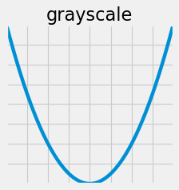
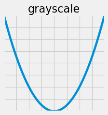

9. Imersão em matplotlib#
9.1. Backend x frontend#
Backends são mecanismos que agem “por detrás do palco” para construir as figuras. São de dois tipos:
Backend interativo: utilizado para produzir figuras para uso em interfaces, tais como PyQt/PySide, PyGObject, Tkinter, wxPython e macOS/Cocoa.
Backend de impressão: utilizado para produzir arquivos de imagem em formatos usuais, tais como SVG, PNG, PDF e PS.
9.1.1. Configuração de backend#
Útil para modificar propriedades padrão de estilo. Realizada de 3 formas:
Modificando as configurações de execução (runtime configuration), comumente chamadas de rc settings.
Definindo a variável de ambiente
MPLBACKEND.Usando a função
matplotlib.use().
9.1.1.1. Modificando as rc settings#
Os parâmetros padrão são definidos em uma variável tipo dict denominada rcParams. Para alterar o backend, devemos alterar a propriedade de mesmo nome no arquivo de configuração matplotlibrc.
Localize o arquivo:
Show code cell source
import matplotlib as mpl
mpl.matplotlib_fname()
'/Users/gustavo/opt/anaconda3/envs/lecture/lib/python3.9/site-packages/matplotlib/mpl-data/matplotlibrc'
Localize a linha do parâmetro
backende a modifique:
## the module name (which must be in the PYTHONPATH) as 'module://my_backend'.
#backend: Agg
Nota: se um backend não for explicitamente definido, o matplotlib usará o disponível no sistema operacional seguindo uma ordem de preferência, assim como se lê no matplotlibrc. Por exemplo:
## The default backend. If you omit this parameter, the first working
## backend from the following list is used:
## MacOSX Qt5Agg Gtk3Agg TkAgg WxAgg Agg
## Other choices include:
## Qt5Cairo GTK3Cairo TkCairo WxCairo Cairo
## Qt4Agg Qt4Cairo Wx # deprecated.
## PS PDF SVG Template
9.1.1.2. Definindo variável de ambiente#
Se este método for usado, uma variável de ambiente pode ser definida para o shell atual ou globalmente. Por exemplo:
export MPLBACKEND=macoxs
Entretanto, defini-la globalmente em arquivos de configuração, tais como .bashrc ou .zshrc pode não ser uma escolha sábia.
9.1.1.3. Usando a função use()#
A função matplotlib.use() deve ser chamada apenas se o script a ser executado depende de um backend específico. Neste caso, a chamada deve preceder a criação de qualquer figura e ser aplicada toda vez que houver alterações de backend entre usuários diferentes. O modo de chamá-la é:
mpl.use('macosx')
9.1.2. Backends predefinidos, renderizadores e canvas#
O matplotlib possui backends predefinidos e, em geral, um backend padrão é carregado quando trabalhamos com plotagens, não sendo, a princípio, necessário tomar nenhuma ação por parte do usuário.
Por outro lado, quando interfaces gráficas ou aplicações web são pretendidas, manipular backends pode ser inevitável. Visando facilitar o desenvolvimento de interfaces, o matplotlib segmenta backends em duas classes:
renderizadores: entidades responsáveis pelo desenho;
canvas: local onde o desenho é feito;
O renderizador canônico para interfaces é o Agg, baseado na biblioteca para C++ Anti-Grain Geometry, responsável pela rasterização das imagens. O Agg é utilizado pelos backends QtAgg, GTK4Agg, GTK3Agg, wxAgg, TkAgg, e macosx. Outro renderizador é baseado na biblioteca Cairo, tal como o QtCairo.
9.1.2.1. Rasterização e vetorização#
Os renderizadores podem ser classificados em dois tipos:
rasterizadores: produzem imagens bidimensionais a partir de uma matriz retangular ou grade de pixels. O espaço de cores a que os pixels se submetem determina a imagem. Exemplos de arquivos de imagens rasterizadas são BMP, GIF, JPEG e PNG. São livres de escala.
vetorizadores: produzem imagens diretamente a partir de formas geométricas, tais como pontos, retas, curvas e polígonos. Exemplos de arquivos de imagens vetorizadas são AI, CDR, SVG e EPS. A representação do pixel depende da resolução, em geral medida em pontos por polegada, i.e. DPI (dots per inch).
A geração de figuras com os backends de impressão é feita por meio do comando
mpl.pyplot.savefig('arquivo.X')
substituindo X pela extensão do arquivo desejado (ex.: png, pdf, ps, eps, svg, pgf).
Os backends interativos são responsáveis por mostrar as figuras em tela (ex.: qtagg, ipympl, gtk3cairo, etc.)
9.2. Dissecando um plot#
O matplotlib plota dados em um objeto abstrato chamado “Figura” (Figure), que contém um “eixo” (Axes) ou mais, que define a “área” de plotagem.
A maneira mais simples de se plotar algo é usando pyplot.subplots e Axes.plot como comandos essenciais.
import matplotlib.pyplot as plt
fig, ax = plt.subplots() # cria figura com eixo único
ax.plot(['a','b','c'],[1,-1,0]); # cria objeto lines.Line2D
9.2.1. Anatomia de uma figura#
Em matplotlib, Artist é uma classe abstrata que comporta vários objetos. Figure, Axes, Axis, Text, Line2D, Patch são todos “filhos” de Artist, mas considerados “artistas” do canvas.
O resumo dos objetos é dado como segue:
FigureCanvas: é uma espécie de contêiner para a Figura. Grosso modo, seria visto como a tela de pintura onde se passa a tinta.Figure: é um recipiente para um ou mais eixos. É possível criar um número arbitrário de figuras contendo linhas, textos e patches próprios, todos independentes de quaisquer eixos.Axes: é a área retangular que contém os elementos básicos gerados pela plotagem.Axis: são os elementos que fornecem a escala, os limites e as marcas (ticks) e as legendas das marcas (ticklabels) que constituirão os eixos das abcissas e das ordenadas.
Nota: embora Axes signifique “eixo”, este objeto determina a “área” de plotagem. Os objetos Axis (“eixos”) correspondem aos eixos propriamente ditos (2 em 2D; 3 em 3D).
Abaixo, seguiremos um passo a passo para descrever a anatomia de uma figura construída com matplotlib.
Figura vazia sem eixos
fig = plt.figure() # figura vazia
#fig.show() # testar em prompt, visto que no Jupyter, o backend é inline.
<Figure size 432x288 with 0 Axes>
Figura vazia com 1 eixo
fig, ax = plt.subplots() # figura com 1 eixo

Figura vazia com dois eixos
fig, ax = plt.subplots(10,2) # figura com 2 eixo
Figura com propriedades alteradas
# altera propriedades
mpl.rcParams['figure.facecolor'] = 'blue'
mpl.rcParams['axes.facecolor'] = 'green'
mpl.rcParams['axes.edgecolor'] = 'white'
fig, ax = plt.subplots()
Acessando rc settings.
# localiza parâmetros do objeto especificado
# e imprime o nome de suas propriedades e valores
from re import match
art = 'axes' # axes
for k,v in mpl.rcParams.items():
if match(art,k):
print((k,v))
('axes.autolimit_mode', 'data')
('axes.axisbelow', 'line')
('axes.edgecolor', 'white')
('axes.facecolor', 'green')
('axes.formatter.limits', [-5, 6])
('axes.formatter.min_exponent', 0)
('axes.formatter.offset_threshold', 4)
('axes.formatter.use_locale', False)
('axes.formatter.use_mathtext', False)
('axes.formatter.useoffset', True)
('axes.grid', False)
('axes.grid.axis', 'both')
('axes.grid.which', 'major')
('axes.labelcolor', 'black')
('axes.labelpad', 4.0)
('axes.labelsize', 'medium')
('axes.labelweight', 'normal')
('axes.linewidth', 0.8)
('axes.prop_cycle', cycler('color', ['#1f77b4', '#ff7f0e', '#2ca02c', '#d62728', '#9467bd', '#8c564b', '#e377c2', '#7f7f7f', '#bcbd22', '#17becf']))
('axes.spines.bottom', True)
('axes.spines.left', True)
('axes.spines.right', True)
('axes.spines.top', True)
('axes.titlecolor', 'auto')
('axes.titlelocation', 'center')
('axes.titlepad', 6.0)
('axes.titlesize', 'large')
('axes.titleweight', 'normal')
('axes.titley', None)
('axes.unicode_minus', True)
('axes.xmargin', 0.05)
('axes.ymargin', 0.05)
('axes3d.grid', True)
Alteração de propriedades selecionadas
mpl.rcParams['axes.spines.left'] = False
mpl.rcParams['axes.spines.right'] = False
fig, ax = plt.subplots()
Alteração de figura com eixos independentes
mpl.rcdefaults() # reset de parâmetros
fig, axs = plt.subplots(1,2,figsize=(4,2),
sharey=True)
# print(len(axs)) # note que há 2 eixos
axs[0].set_facecolor('red');
axs[0].set_title('A');
axs[0].tick_params(axis='x', colors='red')
axs[1].set_facecolor('blue')
axs[1].set_title('B');
axs[1].tick_params(axis='x', colors='blue')
Plotagem de curvas
import numpy as np
x = np.linspace(-1,1)
z = np.random.rand(50)
axs[0].plot(x,x,c='w')
axs[0].plot(x,x**2,c='gray')
axs[1].scatter(x,z,c='w')
axs[1].scatter(x,np.sin(z)-1,c='g')
fig
9.2.2. Template para função de auxílio (helper function) de plotagem#
O código abaixo define uma função de auxílio básica para plotagem genérica usando plot.
def h_plot(ax, x, y, params):
"""
Helper function para gráficos simples e modificação de Line2D.
"""
p = ax.plot(x, y, **params)
return p
np.random.seed(3456)
n = 20
x1,y1,x2,y2 = np.random.rand(n),np.random.rand(n),np.random.rand(n),np.random.rand(n)
fig,(ax1,ax2) = plt.subplots(1,2,
sharey=True,
figsize=(4,2))
h_plot(ax1,x1,y1,{'ls':'--',
'marker':'o',
'ms':5,
'mfc':'b'})
h_plot(ax2,x2,y2,{'ls':':',
'c':'r',
'marker':'*',
'lw':0,
'ms': 10,
'mfc':'y'});
9.3. Estilos de codagem#
Plotagens genéricas podem ser executadas por meio de dois estilos de codagem:
explícito, quando chamamos métodos a partir de objetos
FigureeAxes(estilo orientação a objetos);implícito, quando usamos funções do submódulo
pyplotpara criar esses objetos implicitamente.
Todas as plotagens anteriores foram realizadas pelo modo explícito, mas, vejamos mais um exemplo e como ele se contrasta com o caso implícito.
# exemplo de plotagem EXPLÍCITA (estilo POO)
x = np.arange(2,10) # domínio
fig, ax = plt.subplots(figsize=(4,3))
ax.plot(x,x+1,label='$y = x+1$')
ax.set_xlabel('eixo x')
ax.set_ylabel('eixo y')
ax.legend();
# exemplo de plotagem IMPLÍCITA (estilo pyplot)
x = np.arange(2,10) # domínio
plt.figure(figsize=(4,3))
plt.plot(x,x+1,label='$y = x+1$')
plt.xlabel('eixo x')
plt.ylabel('eixo y')
plt.legend();
Nota: o estilo explícito é recomendado para plotagens complicadas ou scripts reutilizáveis, ao passo que o estilo implícito é recomendado para plotagens simples e rápidas.
9.4. Estilização do Artist#
Para exemplificar estilos, tomaremos como dado de exemplo a série temporal de anomalia de temperatura no período 2020 - 2021 para as coordenadas próximas à cidade de João Pessoa (7.1S,35.0W), disponibilizadas pelo NOAA/NASA.
import pandas as pd
# série temporal de anomalia de temperatura: 2020 - 2021
# (lat,lot) = (7.1S,35.0W) :: JPA
jpa_temp = pd.read_csv('https://www.ncei.noaa.gov/cag/global/time-series/-7.1,-35/land_ocean/12/12/2000-2022/data.csv',
skiprows=4)
ano, temp = jpa_temp['Year'],jpa_temp['Anomaly']
A seguir, temos uma plotagem em mosaico (subplot_mosaic) com formatação independente por eixos. Para criar um mosaico, usamos um formato de matriz com m linhas e n colunas. Cada lista de n elementos deve vir associada à m-ésima linha da matriz como uma “lista de listas”.
O mosaico tem a estrutura de uma matriz 2 x 3. Utilizamos letras para referir-se às linhas, e números às colunas. Neste caso, o quadrante A2 e B3 são dummies.
Primeiramente, plotamos o esquema.
fix, axm = plt.subplot_mosaic([['A1','A1','A3'],['B1','B2','B2']],figsize=(10,7))
axm['A1'].set_title('A1' + ''.center(30,' ') + ' A2 '.center(20,'.'))
axm['A1'].set_xticks([])
axm['A1'].set_yticks([])
axm['A3'].set_xticks([])
axm['A3'].set_yticks([])
axm['A3'].set_title('A3')
axm['B1'].set_title('B1')
axm['B1'].set_xticks([])
axm['B1'].set_yticks([])
axm['B2'].set_xticks([])
axm['B2'].set_yticks([])
axm['B2'].set_title('B2' + ''.center(48,' ') + ' B3 '.center(20,'.'));
Em segundo lugar, plotamos os dados reais.
fix, axm = plt.subplot_mosaic([['A1','A1','A3'],['B1','B2','B2']],figsize=(10,7))
axm['A1'].plot(ano,temp,marker='o',c='#ffaabb')
axm['A1'].axhline(y=0,linewidth=0.5,alpha=0.6,color='k')
axm['A1'].set_title('Série 2000 - 2021')
axm['A3'].stem(ano[-5:],temp[-5:],markerfmt='o',linefmt=':',basefmt='-')
axm['A3'].set_title('Série 2017 - 2021')
# setup de cores para linha 2:
# tons azuis (< 0); tons vermelhos (> 0)
c = ['#e06666']*len(temp)
for i,t in enumerate(temp):
if t < 0:
c[i] = '#4ca6ff'
c[temp.idxmax()] = '#f44336'
axm['B1'].bar(ano[:4],temp[:4],color=c)
axm['B1'].set_title('Série 2000 - 2003')
axm['B2'].bar(ano,temp,color=c)
axm['B2'].set_title('Série 2000 - 2021')
axm['B2'].text(2019, -.1, f'$+{temp.max()}^\circ$',color='#f44336');
9.5. Estilos padronizados#
O matplotlib dispõe de algumas dezenas de estilos padronizados para uso imediato. Para listá-los, invocamos plt.style.available.
for i,e in enumerate(plt.style.available):
print(i+1,e)
1 Solarize_Light2
2 _classic_test_patch
3 _mpl-gallery
4 _mpl-gallery-nogrid
5 bmh
6 classic
7 dark_background
8 fast
9 fivethirtyeight
10 ggplot
11 grayscale
12 seaborn-v0_8
13 seaborn-v0_8-bright
14 seaborn-v0_8-colorblind
15 seaborn-v0_8-dark
16 seaborn-v0_8-dark-palette
17 seaborn-v0_8-darkgrid
18 seaborn-v0_8-deep
19 seaborn-v0_8-muted
20 seaborn-v0_8-notebook
21 seaborn-v0_8-paper
22 seaborn-v0_8-pastel
23 seaborn-v0_8-poster
24 seaborn-v0_8-talk
25 seaborn-v0_8-ticks
26 seaborn-v0_8-white
27 seaborn-v0_8-whitegrid
28 tableau-colorblind10
Para carregar os estilos, usamos plt.style.use(<style>), passando como o estilo como argumento.
sty_test = ['classic','ggplot','fivethirtyeight',
'grayscale']
def plot_test(ax,sty):
exec(f'plt.style.use(\'{sty}\')')
x = np.linspace(-2,2)
ax.plot(x,x**2 - 1,label='$y = x^2 - 1$')
for i,s in enumerate(sty_test):
fig, ax = plt.subplots(figsize=(3,3))
ax.set_title(sty_test[i])
ax.set_xticklabels([]); ax.set_yticklabels([])
plot_test(ax,s)
# restabelece padrão
plt.rcdefaults();
 

9.6. Estilos personalizados#
É possível customizar o estilo das plotagens criando uma folha de estilo (style sheet) personalizada. A style sheet pode ser criada seguindo um padrão similar ao encontrado em CSS.
A folha de estilo possui extensão mplstyle e é carregada com plt.style.use(<arquivo>.mplstyle).
Abaixo temos um extrato de uma style sheet que modifica propriedades de Axes e Grid.
# AXES
axes.titlesize: 16
axes.labelsize: 14
# GRID
axes.grid: True
grid.alpha: 0.5
O código carrega a folha de estilo personalizada deste livro. Depois disso, o estilo das plotagens passa a obedecer às novas regras.
# plotagens em estilo personalizado
plt.style.use('../etc/gcpeixoto-datavis.mplstyle')
for k in range(1,6):
plt.plot(x,k*x)
from numpy import sin, pi, linspace, random
np = 100
x = linspace(0,8*pi,np)
y = 0.5*x*sin(x) + random.rand(1,np)
plt.scatter(x,y,s=8)
<matplotlib.collections.PathCollection at 0x11b9c9c70>
9.7. Introspecção do Artist#
A arquitetura do matplotlib possui 3 camadas maiores:
Camada de base (backend layer), a mais interna.
Camada do artista (artista layer), a intermediária.
Camada de código (script layer), a mais externa.
Na maioria do tempo, usuários do matplotlib escrevem códigos “na superfície” e manipulam o estilo visual das plotagens na camada intermediária. Raramente, o trabalho aprofunda-se na camada de base.
A fim de compreendermos melhor a camada Artist, é útil compreender os seguintes elementos:
matplotlib.backend_bases.FigureCanvas, a área (tela de pintura) sobre a qual uma figura é desenhada;matplotlib.backend_bases.Rendered, o objeto que cuida da renderização noFigureCanvas(mente de quem pinta);matplotlib.artist.Artist, o objeto que usa o renderizador para pintar (pincéis e tintas);
Os dois primeiros estão na camada de base. O último está na camada intermediária. Como qualquer artista, vamos aprender a trabalhar com os materiais de pintura, propriamente ditos, os pincéis e as tintas.
Adicionalmente, existem dois tipos de matplotlib.artist.Artist:
primitivos: representam os objetos gráficos a serem desenhados (
Line2D,Rectangle,Textetc.)contêineres: representam os locais onde os objetos serão pintados (
Axis,Axes,Figure).
O pipeline de uso do matplotlib basicamente depende da criação de uma Figure e da manipulação de Axes.
9.7.1. Manipulando objetos#
# nova figura
fig = plt.figure()
# eixos
# (x_origem, y_origem, largura, altura)
rect1 = 0.0,1.5,0.5,0.1
rect2 = 0.1,1.7,0.3,0.2
rect3 = 0.2,2.0,0.1,0.1
ax1 = fig.add_axes(rect1)
ax2 = fig.add_axes(rect2)
ax3 = fig.add_axes(rect3)
9.7.2. gets e sets#
As propriedades dos objetos são acessadas por get e modificadas por set.
# busca todas as propriedades
mpl.artist.getp(ax1)
adjustable = box
agg_filter = None
alpha = None
anchor = C
animated = False
aspect = auto
autoscale_on = True
autoscalex_on = True
autoscaley_on = True
axes_locator = None
axisbelow = line
box_aspect = None
children = [<matplotlib.spines.Spine object at 0x11b9c9d30>, ...
clip_box = None
clip_on = True
clip_path = None
contains = None
data_ratio = 1.0
default_bbox_extra_artists = [<matplotlib.spines.Spine object at 0x11b9c9d30>, ...
facecolor or fc = (0.51, 0.81, 0.58, 0.1)
figure = Figure(640x480)
frame_on = True
gid = None
images = <a list of 0 AxesImage objects>
in_layout = True
label =
legend = None
legend_handles_labels = ([], [])
lines = <a list of 0 Line2D objects>
navigate = True
navigate_mode = None
path_effects = []
picker = None
position = Bbox(x0=0.0, y0=1.5, x1=0.5, y1=1.6)
rasterization_zorder = None
rasterized = None
renderer_cache = <matplotlib.backends.backend_agg.RendererAgg objec...
shared_x_axes = <matplotlib.cbook.Grouper object at 0x10ec0b610>
shared_y_axes = <matplotlib.cbook.Grouper object at 0x10ec4f2b0>
sketch_params = None
snap = None
title =
transform = IdentityTransform()
transformed_clip_path_and_affine = (None, None)
url = None
visible = True
window_extent = TransformedBbox( Bbox(x0=0.0, y0=1.5, x1=0.5, ...
xaxis = XAxis(0.0,720.0)
xaxis_transform = BlendedGenericTransform( CompositeGenericTrans...
xbound = (0.0, 1.0)
xgridlines = <a list of 6 Line2D gridline objects>
xlabel =
xlim = (0.0, 1.0)
xmajorticklabels = [Text(0.0, 0, '0.0'), Text(0.2, 0, '0.2'), Text(0....
xminorticklabels = []
xscale = linear
xticklabels = [Text(0.0, 0, '0.0'), Text(0.2, 0, '0.2'), Text(0....
xticklines = <a list of 12 Line2D ticklines objects>
xticks = [0. 0.2 0.4 0.6 0.8 1. ]
yaxis = YAxis(0.0,720.0)
yaxis_transform = BlendedGenericTransform( BboxTransformTo( ...
ybound = (0.0, 1.0)
ygridlines = <a list of 2 Line2D gridline objects>
ylabel =
ylim = (0.0, 1.0)
ymajorticklabels = [Text(0, 0.0, '0'), Text(0, 1.0, '1')]
yminorticklabels = []
yscale = linear
yticklabels = [Text(0, 0.0, '0'), Text(0, 1.0, '1')]
yticklines = <a list of 4 Line2D ticklines objects>
yticks = [0. 1.]
zorder = 0
# busca valor da propriedade `get_frame_on()`
ax1.get_frame_on()
fig
# altera valor da propriedade `get_frame_on()`
ax1.set_frame_on(False)
fig
plt.rcdefaults();
9.8. Estilização temporária#
import matplotlib.pyplot as plt
import numpy as np
x = np.linspace(0.5,3)
with plt.style.context('seaborn'):
plt.plot(x,np.log(x),c='#117029');
with plt.style.context('seaborn-talk'):
plt.plot(x,np.log(x),c='#117029');